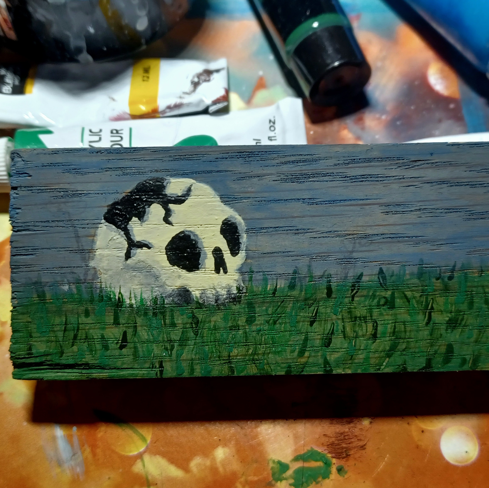
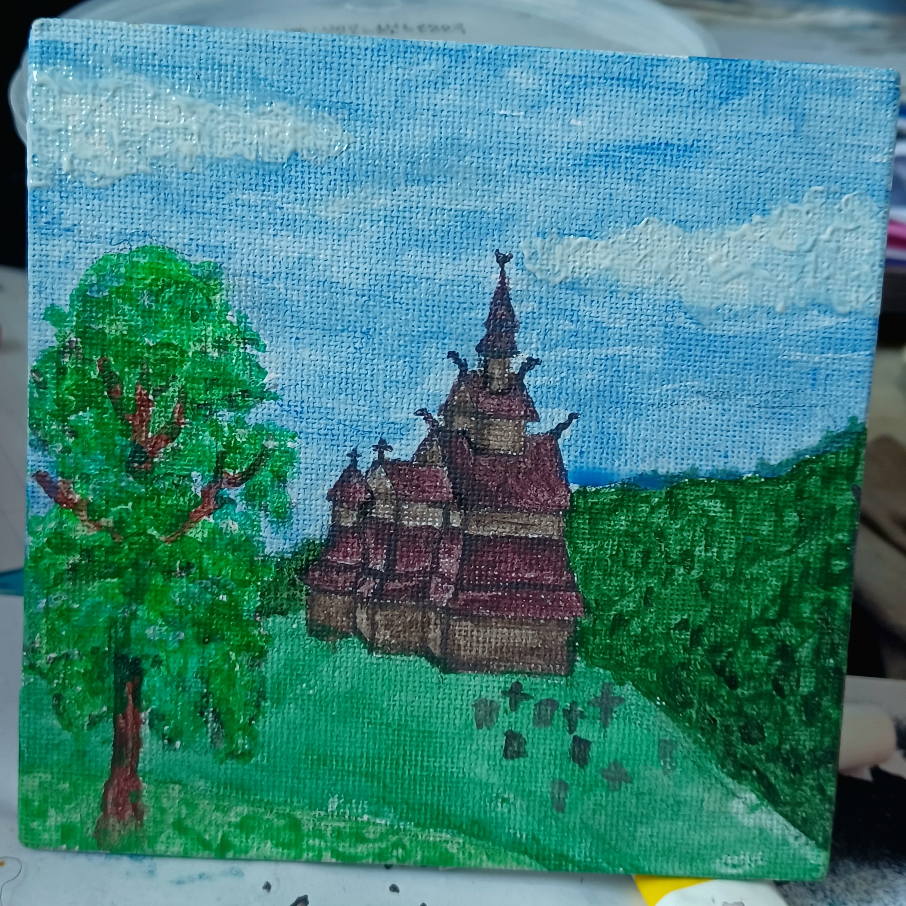

Paintings
This page contains paintings i made. I use acrylic paint for my paintings. I paint the most on paper or a canvas but i also like painting on wood because the wood texture in the background looks nice.
-

This is a painting on a canvas. It is an alien giving a flower to a cow.
-

This is a painting on paper. It is a galaxy with two silhouettes of hot air balloons.
-

This is a paintong on the lid of a metal box. It is a fantasy forest landscape.
-

This is a painting on wood. It is a galaxy background with a cut out drawing on it of death blowing bubbles.
-

This os a painting on a canvas. It is a background of colourd circels with a duck with a tophat and a goose that are in love on it.
-

This is a painting on canvas. It is of two buildings with graffiti on it.
-

This is a painting on wood. It is a broken skull laying on a feild of grass.
-

This is a painting on a canvas. It is a norwegian church made from wood build in the 1300s.
-

This is a painting on paper. It is a galaxy background with a silhouette of a child sitting on a cliff.
-

This is a painting on a lighter. It is a pixel heart.
-
This is a painting on a canvas. It is a zoomed in eye.
-

This is a painting on a lighter. It is mushrooms in different colours.
-

This is a painting on paper. It is a li in a red cloak in a forest.
-

This is a painting on paper. It is a galaxy with a space cloud.
-

These are paintings on lighters. The left one has red and black stripes and the right one has the pokemon spinda on it.
-

This is a painting on a canvas. It is a sunset at sea.